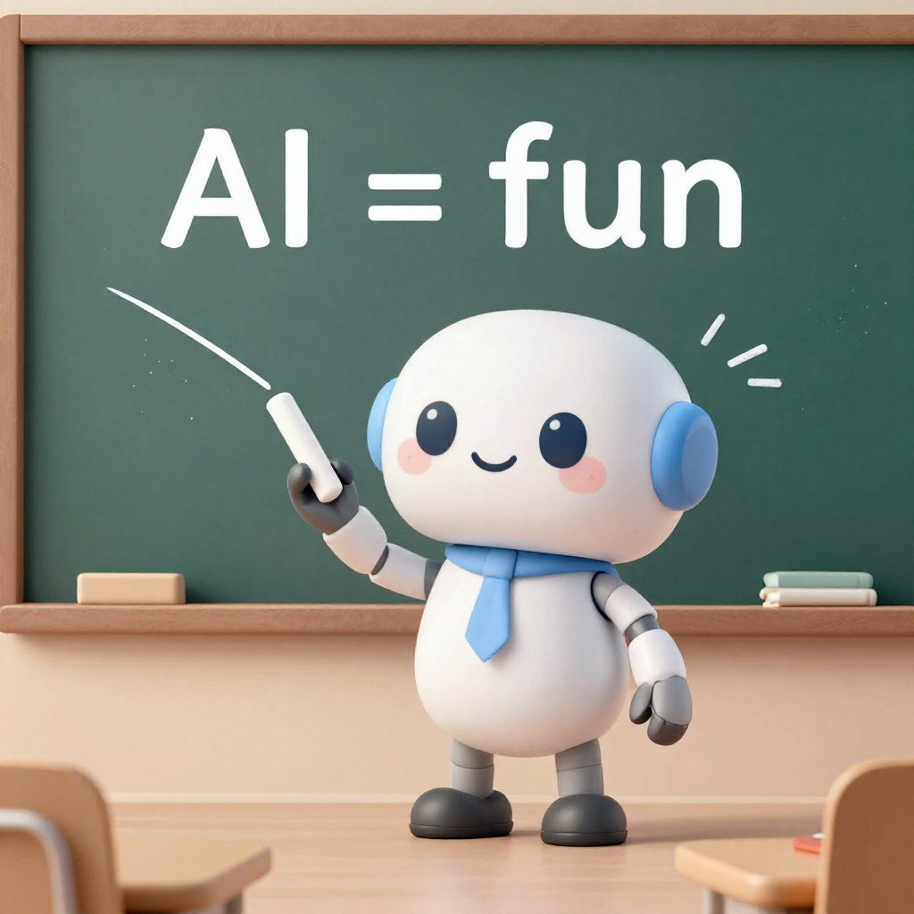

Lucas S. Vieira
Nomenclaturas de IA
Guilda de IA
Para construir agentes, o essencial é tool calling + contexto longo. Modelos densos (não-MoE) tendem a ser mais consistentes nisso.
GPT-5.6 ficou em três tiers: Sol (topo), Terra (~GPT-5.5 por 2x menos), Luna (econômico).
Como? Mais dados de treino, destilação, MoE e pós-treino.
Para quem constrói: o que importa são capacidades mensuráveis. O modelo faz tool calling? É estável? Foco no que você pode testar.
"Quando foi fundada a Liga de IA?"
→ LLM sem RAG: "Não sei" ou inventa data
→ Com RAG: busca no documento, encontra "2025", responde "2025"
LLM puro:
Usuário: "Quanto é 234 × 987?"
LLM: "230.898" (pode estar errado, ele chutou)
Agente:
Usuário: "Quanto é 234 × 987?"
Agente: "Deixa eu calcular..."
→ Usa ferramenta de calculadora
→ Responde: "230.958" (correto)
LLM só fala. Agente fala E faz coisas.

Exemplos independentes — cada um demonstra sua própria modalidade.
| Termo | O que é | Exemplo |
|---|---|---|
| IA | Campo geral (contém tudo) | Spam filter, Xadrez, ChatGPT |
| LLM | IA generativa de texto | GPT-6 Astra, GLM-5.3, Gemma 4 |
| Difusão | IA generativa de imagem/vídeo/música | Z-Image, MiniMax H3, Music 3 |
| RAG | Busca + geração | Chatbot que consulta PDFs |
| Agente | LLM + ferramentas + memória | Assistente que calcula, busca, age |
| Frase | Termo correto |
|---|---|
| "Vou usar IA para responder" | LLM ou Agente |
| "Meu RAG responde perguntas" | Agente com RAG |
| "O agente alucina" | LLM alucina |
| "Preciso treinar minha IA" | LLM fine-tuning |
| Semana | Conceito |
|---|---|
| 1 | IA, LLM, RAG, Agentes (conceitos) |
| 2 | Prompting básico |
| 3 | Demo prática de agentes |
| 4-5 | Python mínimo, Python + API de LLM |
| 6-8 | Estrutura de um agente, ferramentas, ferramentas múltiplas |
| 9 | Embeddings, similaridade e RAG |
| 10 | Fine-tuning |
| 11 | Apresentação final |
Agora, você vai ouvir "RAG", "Agente", "LLM" e saber exatamente o que é.